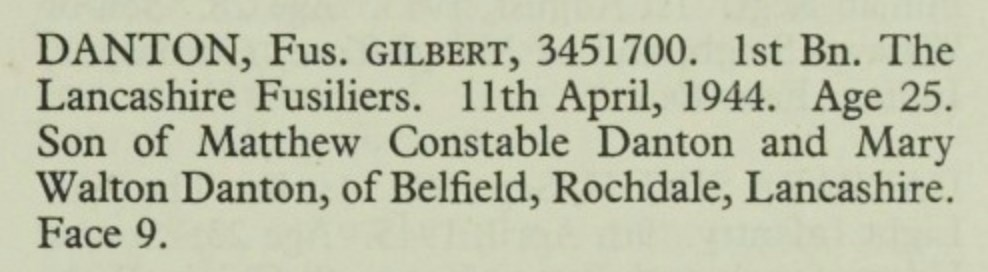

Gilbert Danton 1919 - 1944
[ Home ] | [ Calendar ] | [ Surnames Index ] | [ Errors ] | [ Family History ]A general labourer and the child of Matthew Danton (a maintenance & textile fitter at a silk mill) and Mary Barlow, Gilbert Danton, the second cousin once-removed on the father's side of Nigel Horne, was born in Rochdale, Lancashire, England on 6 Jan 19191,2,3,4.
During his life, he was living at 58 Bridgefield Street in Rochdale on 19 Jun 19211 and at 92 Bellshill Crescent in Rochdale on 29 Sept 19392 and c. 19446 (the same place as his parents had been living on 29 Sept 1939). During 1944, he was serving in the military in Myanmar (regiment: Lancashire Fusiliers; Rank: Fusilier; Service number: 3451700).
He died on 11 Apr 1944 in Myanmar4,5 (missing, presumed killed in action) and was buried at Rangoon Memorial Cemetery, Rangoon, Yangon, Myanmar after 11 Apr 1944.
Parents
- Matthew Constable was born on 28 Sept 1898
- Mary Walton was born on 26 Mar 1894
Citations
- 1921 Census Of England & Wales - Findmypast (was age 2 and a boarder in the household)
- 1939 Register - Findmypast (was the son of the head of the household)
- England & Wales births 1837-2006 - Findmypast
- World War 2 Allies Collection - Findmypast
- Commonwealth War Graves Commission Debt Of Honour - Findmypast
- Army Roll Of Honour 1939-1945 - Findmypast
Media
Gilbert Danton - Commonwealth War Graves Commision

England & Wales births 1837-2006 Transcription - BMD-B-1919-1-AZ-000253-032
GRO WAR DEATHS ARMY OTHER RANKS (1939 to 1948) Transcription - BMD-OVS-ARR2-000214-037
Army Roll of Honour 1939-1945 Transcription - GBM-WWIIARH-0070100
British Army Casualty Lists 1939-1945 Image - GBM-WO417-081-0648
British Army Casualty Lists 1939-1945 Image - GBM-WO417-100-0421
Commonwealth War Graves Commission Debt Of Honour - GBM/CWGC/ROLLOFHONOUR/001212797
World War 2 Allies Collection - WW2/06737840
World War 2 Allies Collection - WW2/00070054
1921 Census of England & Wales - GBC/1921/RG15/20005/0433/06
1939 Register - TNA/R39/4587/4587I/012/42
Family Tree

Map
Generated by ged2site. Last updated on Jul 3, 2024
Known Issues
Burial place (Rangoon, Yangon, Myanmar) has no citations
19 Jun 1921: Not living with either parent in childhood when aged 2
Adding date of burial as 'aft 11 Apr 1944'